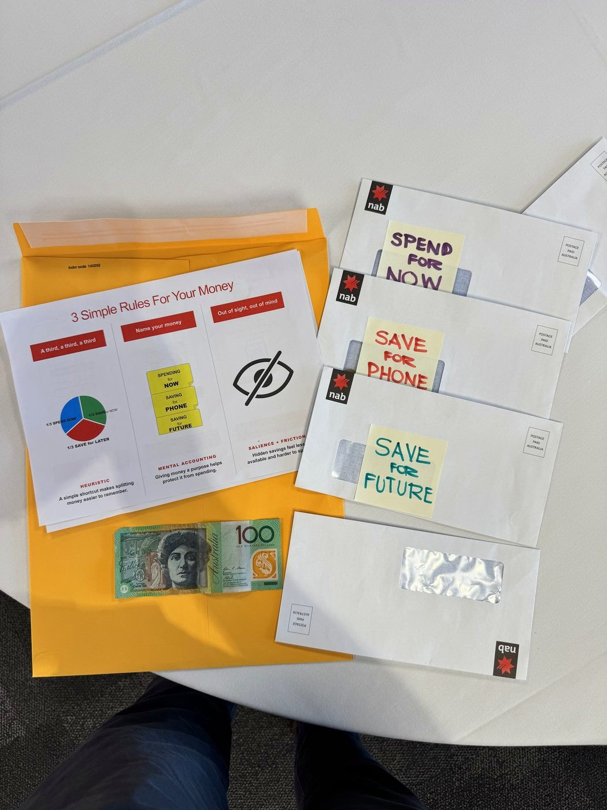

The evidence at a glance
46% became 88%
Renaming which mental account a $10 loss came from nearly doubled how many people still bought a replacement ticket.
3.5% became 13.6%
Committing today to a future pay raise, not today's pay, nearly quadrupled one workplace's average savings rate.
Named goals, roughly double the effect
A reminder mentioning the actual savings goal worked about twice as well as one that didn't.
A live demo, three simple rules
The demo ran during an “Everyday Banking” talk to a room of Year 8 and 9 students at a real high school, recapped in full in this site's own field session. It opened with a pair of sneakers marked down live in front of the room, then moved into the part that actually mattered: what to do with money once it lands.
The rule taught was deliberately plain. Split every pay three ways, spend, save for something specific, save for later, then treat the three thirds differently: spend from the first, watch the second grow toward a named goal, and put the third somewhere it won't get touched. Three hand-labelled envelopes on a table made the split physical before it ever got explained.


Stripped of the room and the envelopes, the same three rules reduce to one connected flow: money in, split three ways, each third named, and the one meant to last moved out of sight.
One flow, three rules. Split it, name it, then let the one meant to last disappear from view.
Why deciding the split on payday, not after, works
The classroom's first rule was about timing, not maths: the split happens the moment the money arrives, before any of it has been mentally spent. That timing is the entire mechanism behind one of the most consequential nudges ever deployed in a real workplace.
Save More Tomorrow asks an employee to commit now to saving more later, but only out of a raise that hasn't happened yet. Present bias has nothing to resist, because today's pay never moves. Loss aversion has nothing to bite on, because take-home pay keeps rising at every raise, just by less than it otherwise would. Nobody has to feel a pay cut to save more.
Why naming it, and hiding it, borrow the same trick
Splitting the money early solves when the decision gets made. The classroom's other two rules, name it and hide it, solve a different problem: what stops the money moving again once it's already sitting in an account. Both borrow the same underlying finding about how a labelled sum of money gets treated differently from an identical, unlabelled one.
The original study never mentioned savings accounts. It asked people to imagine losing a $10 theatre ticket, already paid for, versus losing $10 in cash on the way to the same show. The dollar amount was identical either way. Only which mental account absorbed the loss differed.
That study only tested naming and framing directly. It never tested hiding a labelled account from view, so this report treats that third rule as a reasonable, real-world extension of the same mechanism, not a separately proven finding. If a named account already resists casual spending because it's mentally filed apart from everyday cash, an account that's also out of daily sight has one fewer chance a day to get reconsidered. The classroom's own experience with this exact idea is already being tested more directly: this site's named-pockets experiment lays out how to check whether naming alone, without hiding, holds a balance just as well.
Turning three rules into six real taps
Two real studies and one honest extension explain why the three rules work. None of that tells you which button to press. The rest of this section does, using CommBank's own app, researched against its own support pages rather than assumed.
Before the six real steps, here's what the end state actually looks like once all three rules are running: one everyday account, two savings pockets, one of them tucked out of the default view.
Pockets
Getting there is six real steps, not three, because a phone adds two the classroom's envelopes never needed: an app to move the money in the first place, and a way to check back in once it's out of sight.
- Step 5 (the reminder) is not a real CommBank feature. CommBank's own reminder tools, Bill Sense, payment alerts, are tied to specific bills, not a general “check in on your savings” prompt. Shown here as a phone's own Reminders app instead of a fabricated CommBank screen.
- Step 6 (Goal Tracker) is real, confirmed via CommBank's own Goal Tracker page: it breaks a savings goal into weekly targets and tracks progress against them, for GoalSaver or NetBank Saver accounts. Whether it renders as a bar or a full historical chart couldn't be confirmed from text sources alone, so it's drawn here showing only the confirmed behaviour: weekly-target progress.
Everyday account
Pay lands here first, same as any account.
Pay & Transfer
Move a third into each savings account. No daily limit between a customer's own CommBank accounts.
Rename this account
Save for Future
Turned off, this account stops appearing on the accounts home screen. It still earns interest as normal.
Reminders
Goal Tracker
Weekly targets toward each goal, for GoalSaver and NetBank Saver accounts.
The step most people skip: checking back in
Steps 1 through 4 above run once and then run themselves: a standing transfer doesn't need to be told twice. Step 5 is different. Nothing about hiding an account creates a reason to ever look at it again, and a savings pocket nobody checks is a savings pocket that's easy to quietly stop funding.
A real field experiment tested exactly this, across three banks in three countries, on clients who'd already opened a commitment savings account and set a real goal.
Put together, the four findings above cover the same ground the classroom covered in one afternoon: a mental account changes how money gets treated, a delayed commitment gets around the biases that fight saving more, and a reminder that names the actual goal is what keeps the whole thing running. None of the three rules works alone. Splitting money without naming it is just moving numbers between accounts. Naming it without a standing transfer relies on remembering to do it every payday. Automating and naming it without ever checking back in still lets the habit quietly lapse.
Three questions worth asking before copying this
- Does the split have to be a third each?No. The mechanism is deciding the split in advance, on payday, not the exact ratio. A third, a third, a third is just the ratio the classroom used because it's easy to explain, and the demo never tested any other split against it.
- What if a bank doesn't offer named sub-accounts?Three ordinary savings accounts, each renamed, do the same job. The naming is what changes the mental account, not the specific product feature a bank happens to call a “pocket” or a “space.”
- Does a reminder that doesn't mention the goal still help at all?The cited study found a generic reminder still worked, just roughly half as well as one naming the actual goal. A vague “check your savings” alert beats no reminder at all, but it's a genuinely weaker version of the same lever.